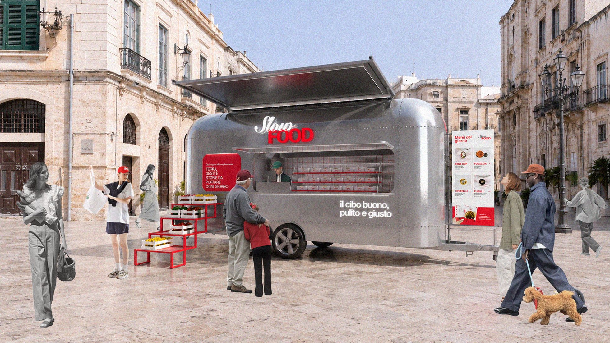
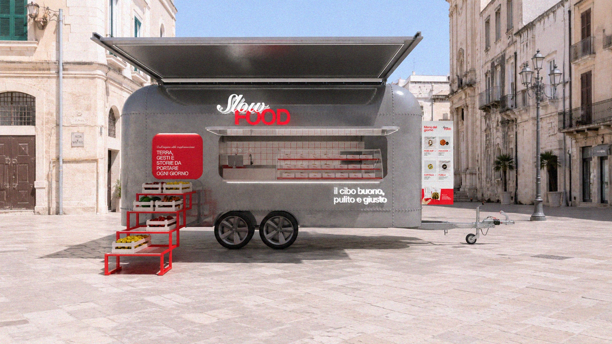
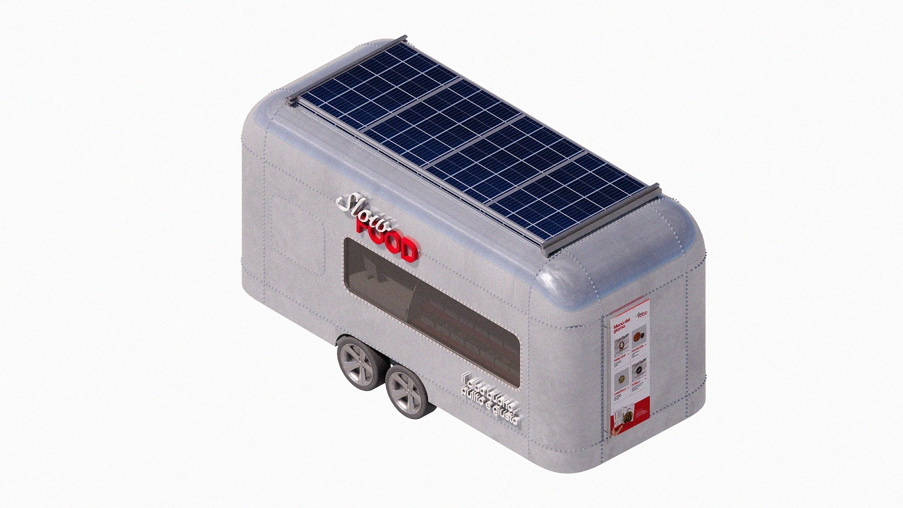
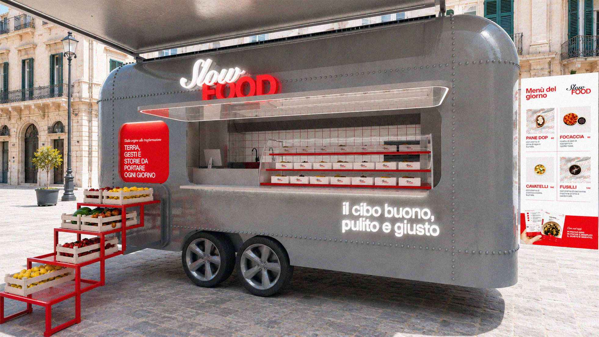
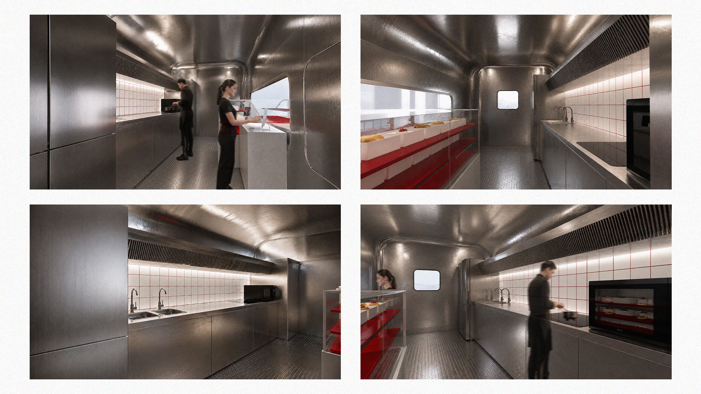
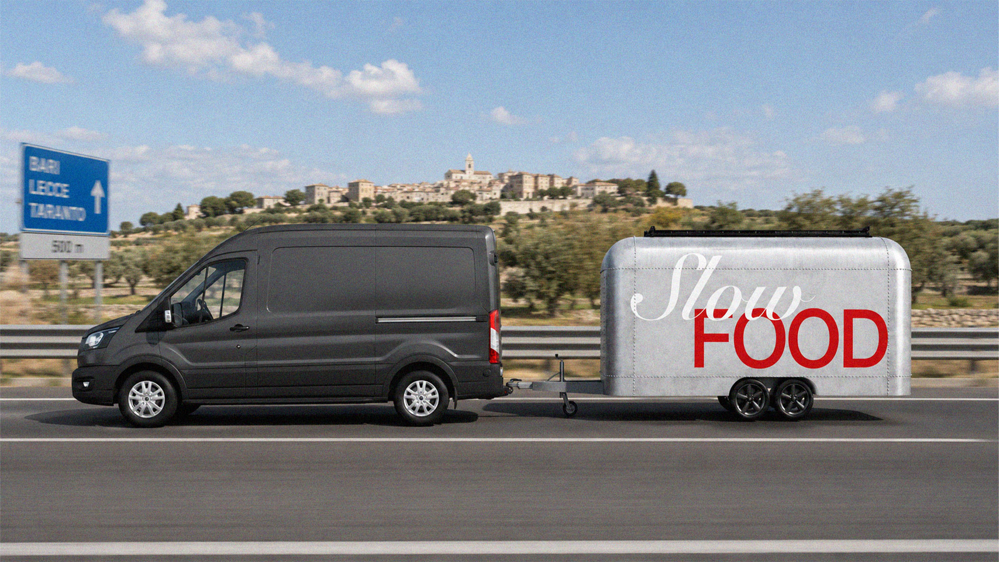
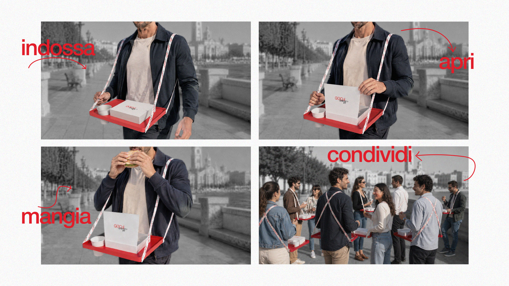
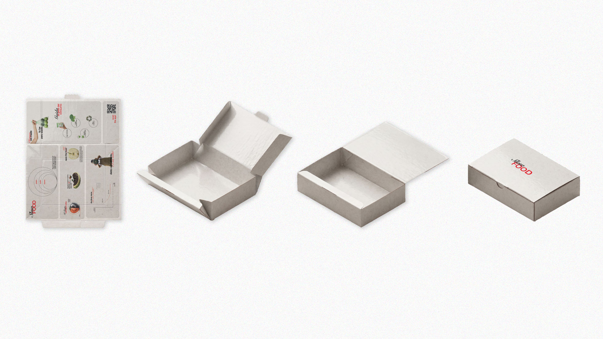
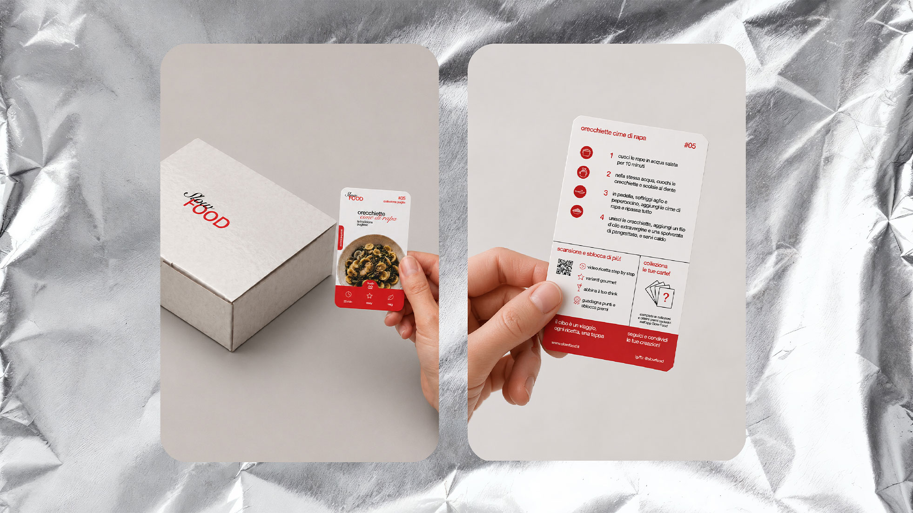
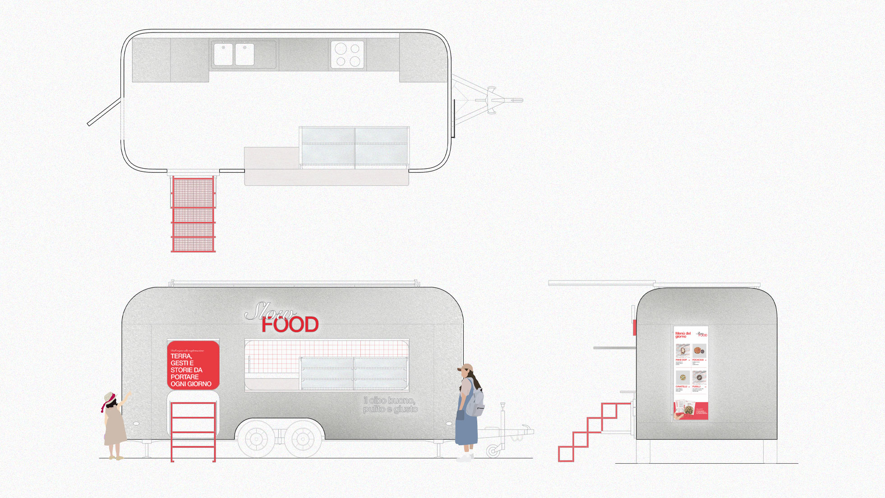

A MOBILE MARKET system
FOR THE CULTURE OF
SLOW FOOD.
[PROJECT INFO]
A mobile market system designed to bring the values of Slow Food into everyday life, addressing the gap between awareness and conscious food choices. The project starts from the observation that, when time and mental energy are limited, food choices tend to become faster and more standardized. Design therefore becomes a tool to reduce this friction and bring Slow Food into contemporary urban flows.
The result is a distributed itinerant system connecting local producers, Slow Food Alliance chefs, a digital coordination hub, logistics and a fleet of food trailers. Seasonal ingredients are transformed into prepared dishes, recipes and cooking kits, while the hub coordinates availability, menus and routes, connecting food, territory and community.
Sustainability is integrated through local and seasonal production, short supply chains, coordinated logistics, photovoltaic energy and reusable packaging, helping reduce unnecessary movements and food waste. The food trailer becomes a mobile market, kitchen and storytelling device, adaptable to urban, peripheral, tourist and cultural contexts.
The experience extends beyond consumption through a “table to wear”, educational packaging, cooking kits and collectible recipe cards, connecting users with ingredients, producers and territories while continuing the experience at home.
Developed as a pilot network in Puglia, the project combines exhibition and service design, communication, logistics and sustainability into a replicable model that translates Slow Food’s values into a concrete, accessible and contemporary everyday experience.








